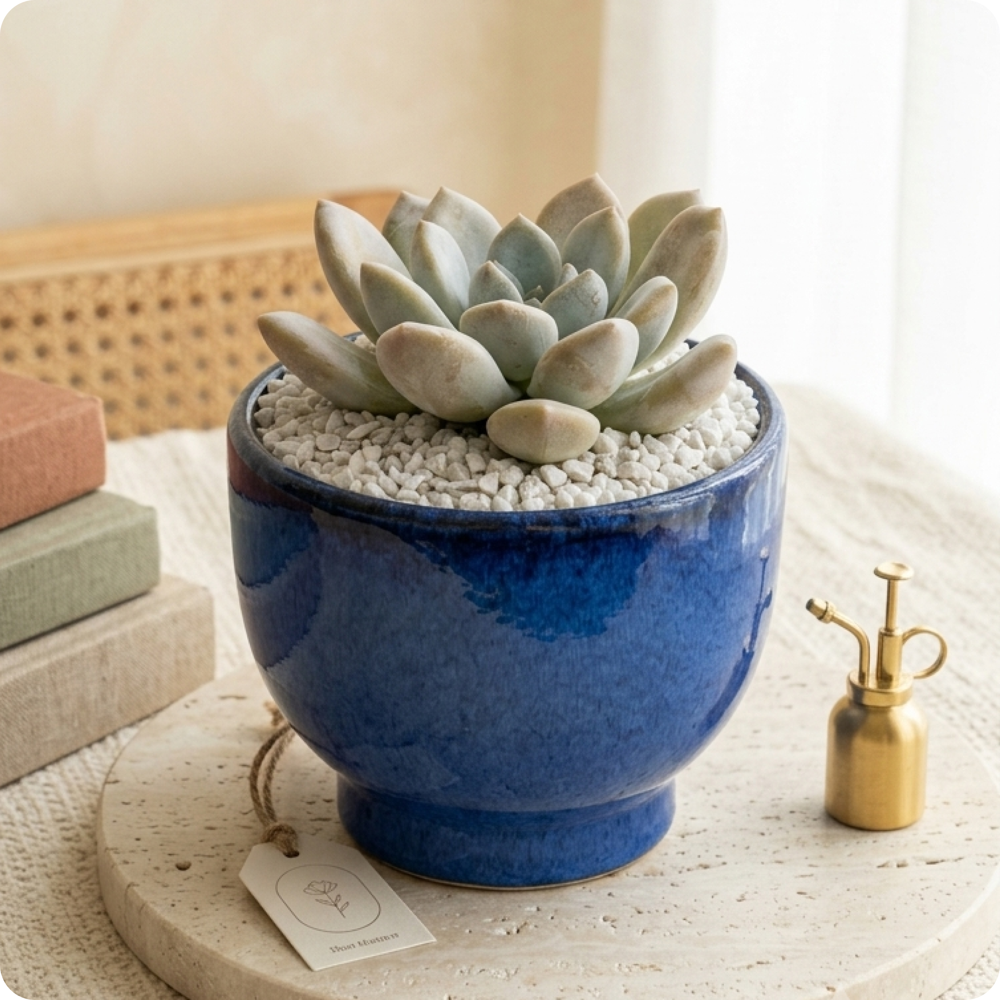

Something's in the box, ready for you to grow.
A single succulent, settled into its pot with care. A short video and a few honest notes from us, so it keeps thriving long after it reaches your table.

Unboxing & planting, in one sitting
What it needs, at a glance
Tiny tips for happy little greens
Planting it, step by step
Let it breathe
Take the plant out of its packaging and let it sit for an hour before handling — no rush, it's been on a journey.
Check the roots
Gently loosen a compacted root ball. Trim away any roots that look dark or mushy.
Lay the base
Add a layer of fast-draining mix to the bottom of the pot, enough to cover the drainage hole.
Set it in place
Position the plant, backfill with soil, and keep the stem at the same depth it was growing at before — don't bury it.
Hold off on water
Wait 2–3 days before the first watering. This lets any trimmed roots callous over and settle in.
A rhythm to settle into
Let it settle. No water, just a bright spot to call home.
First deep water. Soak until it drains, then don't touch it again until the soil is bone dry.
Soak and dry, on repeat. Give the pot a quarter turn each week for even light.
Check the roots aren't crowding the pot. Repot only when they are.
A quick read on the signs
Overwatering. Let it dry out completely before the next soak, and check the pot is draining properly.
Underwatering. Give it a deep soak — it will plump back up within a day or two.
Not enough light. Move it closer to a window, ideally one that gets some direct sun.
Perfectly normal. It's shedding older leaves as it adjusts to its new home.